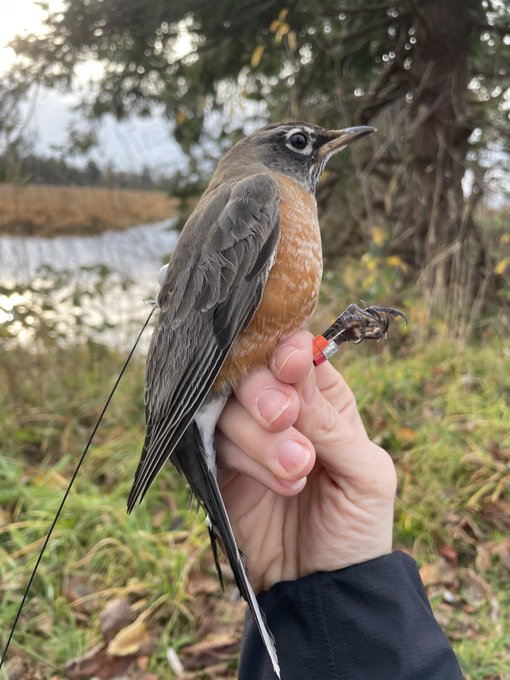

15-Feb-2023
Le récepteur Ankeny Hill Motus apporte déjà d'importantes contributions à la recherche sur les oiseaux migrateurs !

Un Merle d'Amérique similaire marqué en 2021. - photo parImlay, Tara. Environment and Climate Change Canada (Copyright, Tous droits réservés - Utilisé avec permission)
Un Merle d'Amérique qui a été marqué au Canada en octobre 2022 se trouve toujours à Ankeny NWR. Il a été détecté pour la première fois à Ankeny NWR le 10 janvier. Le rouge-gorge a "disparu" pendant un certain temps après le 18 janvier et est réapparu occasionnellement tout au long du mois de février. Cela peut signifier que le rouge-gorge est toujours là, mais est hors de la vue de nos antennes.
Le merle a été marqué dans le cadre d'un projet de recherche dirigé par le Canada par le Dr Tara Imlay, biologiste des oiseaux terrestres à Environnement et Changement climatique Canada en Colombie-Britannique.
Le Dr Imlay nous dit "C'est super cool que cet individu traîne à la NWA[R] depuis plus d'un mois maintenant. Nous en savons si peu sur les mouvements des oiseaux pendant la période de non-reproduction, que tous ces petits points de données peuvent vraiment s'additionner."
Elle poursuit en disant : "Le but de cette étude est de mieux comprendre la survie hivernale des merles dans la région métropolitaine de Vancouver et de mieux comprendre le rôle que les sources anthropiques de mortalité (chats, collisions) ont sur la survie. Nous recueillons également des informations sur l'utilisation de l'habitat, dans les mouvements hivernaux (et celui-ci est important !), le comportement migratoire par rapport aux résidents et le moment de la migration. »
Jusqu'à présent, le dernier signal de ce Motus robin a été détecté le 10 février. Un écart de signal précédent a duré plus de deux semaines de sorte que l'oiseau peut simplement être hors de portée ou derrière une colline. Il y a des milliers de rouges-gorges à Ankeny en ce moment si clairement le refuge est un refuge d'hiver avec une bonne provende de rouge-gorge.
Le Dr Imlay est assez convaincu que les détections observées sur notre carte près de Québec sont de "fausses détections". Elle remarque que certains les stations peuvent être particulièrement " ... bruyant et générant beaucoup de fausses détections, et il n'y a tout simplement pas assez de temps pour que cet oiseau ait voyagé du Québec à l'Oregon."
Credits:
Article développé par Harry Fuller et Rich Schramm.
Droits: CC BY-SA 3.0